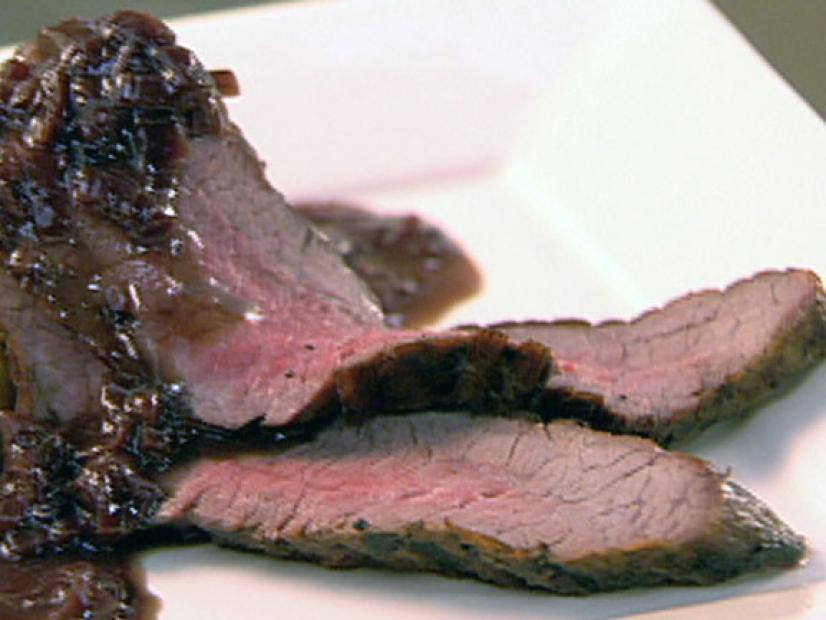

What you'll need...
- Shallots Thinly Sliced
- 4 TBSP Olive Oil
- 1 Cup Beef Broth
- 1 Cup Red Wine
- Salt and Freshly Ground Black Pepper
- 1-1 1/2 lb Bavette Steak
- 1 TBSP of Cold Butter in Chuncks
- A Grill or Pan
How to do it...
- In a medium saucepan over medium-high heat, saute the shallots in 2 tablespoons
of the olive oil until lightly caramelized, about 5 to 7 minutes. Raise the heat
to high and add the red wine and reduce by half. Add the broth and reduce by half.
Check for seasoning, and season with salt and pepper, to taste. Keep warm on low heat.
- Brush the flank steak on both sides with 2 tablespoons of the olive oil and season with
the salt and pepper. Place on the center of grill and sear 5 to 8 minutes per side for
rare to medium rare, testing by pressing the meat with a finger: The spongier the meat
feels, the rarer it is cooked. Remove from the grill and allow to rest, very loosely
tented with aluminum foil, 5 to 10 minutes, to allow the juices to reabsorb into the m
eat. Slice the flank steak on the diagonal and place on a large platter. Finish the
sauce by swirling in the chunks of cold butter, then top the steak with some of the
s
auce and serve the rest on the side.